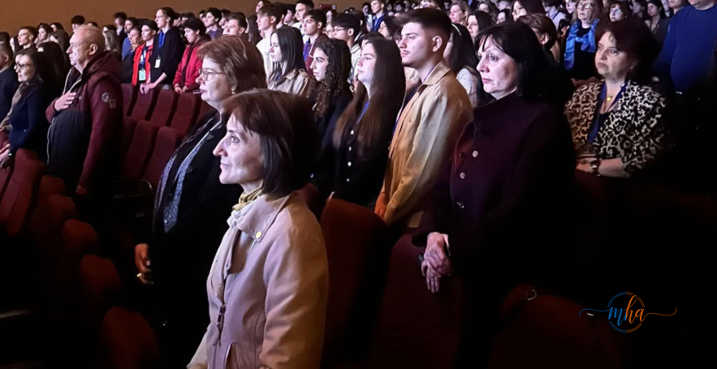

În perioada 20–24 aprilie 2026, județul Mehedinți găzduiește Olimpiada Națională de Biologie (nivel liceal), una dintre cele mai importante și prestigioase competiții școlare din România, dedicată elevilor cu performanțe de top în domeniul științelor naturii. Autoritățile județene și locale asigură logistica, finanțarea și condițiile de cazare pentru toți participanții.
🎓 Date eveniment — ONB 2026 Mehedinți
| Eveniment | Olimpiada Națională de Biologie (liceal) |
| Perioada | 20–24 Aprilie 2026 |
| Locația | Drobeta-Turnu Severin, jud. Mehedinți |
| Organizatori | ISJ Mehedinți + MEC + CN Traian |
| Parteneri | CJ Mehedinți, Primăria DTS, CL DTS |
| Invitați oficiali | Prefect, Președinte CJ, Primar + MEC |
Ceremonie festivă de deschidere la Colegiul Național „Traian"
Inspectoratul Școlar Județean Mehedinți, în parteneriat cu Ministerul Educației și Cercetării și Colegiul Național „Traian", a organizat deschiderea oficială a Olimpiadei Naționale de Biologie, într-un cadru festiv care a reunit elevi de excepție, cadre didactice și invitați de seamă.
La ceremonie au fost prezenți: Alin Isuf, prefectul județului Mehedinți, Aladin Georgescu, președintele Consiliului Județean Mehedinți, Marius Screciu, primarul municipiului Drobeta-Turnu Severin, dar și reprezentanți ai Ministerului Educației: doamna inspector Dana Călugăru și doamna Iovanovici Nicoleta, președintele Comisiei Centrale a Olimpiadei Naționale de Biologie.

Sala plină la ceremonia de deschidere a ONB 2026 — elevi din toată România la Drobeta-Turnu Severin | Foto: MehedintiAzi.ro
Mesajul ISJ Mehedinți
„Inspectoratul Școlar Județean Mehedinți, în parteneriat cu Ministerul Educației și Cercetării și Colegiul Național «Traian», a organizat deschiderea oficială a Olimpiadei Naționale de Biologie, un eveniment de prestigiu dedicat performanței și excelenței în educație. Ceremonia s-a desfășurat într-un cadru festiv, reunind elevi de excepție, cadre didactice și invitați de seamă. Mulțumiri deosebite Colegiului Național «Traian» pentru găzduirea acestui eveniment și doamnei director, profesor Mariana Dumitrașcu, pentru implicare și sprijin! Adresăm mulțumiri partenerilor noștri: Consiliul Județean Mehedinți, Primăria și Consiliul Local Drobeta-Turnu Severin, pentru susținerea acordată. Le dorim mult succes tuturor participanților și o experiență de neuitat în cadrul acestei competiții!"
Aladin Georgescu: „Mehedinți susține olimpicii de astăzi"
„Faptul că această olimpiadă se desfășoară în județul Mehedinți reprezintă un motiv de satisfacție și confirmă capacitatea noastră de a organiza evenimente educaționale importante, la nivel național. Mă bucur să le fim gazde participanților și apreciez implicarea tuturor celor care au contribuit la organizarea acestui eveniment. Consiliul Județean Mehedinți susține desfășurarea competiției, în parteneriat cu Inspectoratul Școlar Județean Mehedinți, Primăria Municipiului Drobeta Turnu Severin și Colegiul Național «Traian», prin asigurarea condițiilor necesare. Olimpiada Națională de Biologie este o competiție care valorizează performanța și seriozitatea în pregătire, dar și interesul pentru știință și pentru înțelegerea mediului în care trăim. Cu atât mai mult îi susținem pe olimpicii de astăzi, tineri preocupați de cunoaștere, cercetare și de construirea unui parcurs bazat pe performanță. Îi felicit pe organizatori pentru efortul depus și le mulțumesc tuturor celor implicați pentru sprijinul acordat. Urez tuturor participanților mult succes și o experiență frumoasă în județul Mehedinți!"
Un județ care știe să primească olimpici
Găzduirea Olimpiadei Naționale de Biologie reprezintă o oportunitate importantă pentru județul Mehedinți, care demonstrează capacitate organizatorică la nivel național. Competiția aduce în municipiu sute de elevi din toată România, însoțiți de profesori coordonatori, creând totodată un schimb valoros de experiență și o imagine pozitivă pentru județ.
Colegiul Național „Traian" din Drobeta-Turnu Severin, una dintre instituțiile de tradiție ale educației mehedințene, a primit cu onoare rolul de gazdă, asigurând spațiile necesare pentru buna desfășurare a competiției. Directoarea instituției, prof. Mariana Dumitrașcu, a primit mulțumiri speciale din partea ISJ pentru implicarea și sprijinul acordat.